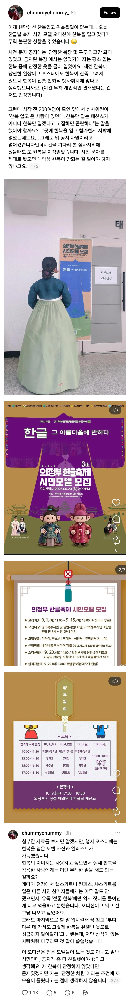

https://bbs.ruliweb.com/best/board/300143/read/76747109

https://bbs.ruliweb.com/best/board/300143/read/76747109

한 사람 말만으로는 판단 불가임. 일단 욕부터 하고 나중에 되면 그럴줄 알았어 ㅎ 하는게 쉽긴하지.
혹시 몰라서 한쪽 주장만 보고 판단은 안하겠음
한글날 모델 심사하는데 200명 중 혼자 한복 입었다면 사전에 안내 받았을지도 모름
허
드가면 됨?
3th는 뭐냐
ㅋㅋㅋㅋㅋㅋㅋㅋ
삼쓰!
진심으로 충격적이다 ㅋㅋ저게 오피셜하게 나갔다는게
쓰리쓰 거꾸로해도 쓰리쓰
이미 내정자 뽑아놨는데 강력한게 나오니까 쿠사리준거일듯
주최자 위원이 중국인이 있나 ㅋ
취재 들어가야겠지?
주최측이 정부 기관이나 공기업 같다?? 그럼 바로 국민신문고 고고
존나 웃긴새끼들 맞네..ㅋ
민원 넣어야겠는걸
근데 안뽑으면 되지 굳이 뭐라고해서 일을 만드나?
단정한 복장에 한복은 해당사항 없는겨?
애초에 원하는 복장이 확고한거 같은데 애매하게 단정한 복장 이지랄 하지 말고 정장차림으로 오라고 못을 박던가 지들이 애매하게 공지해놓고 한복입고 왔다고 꼽주네 빙신들이